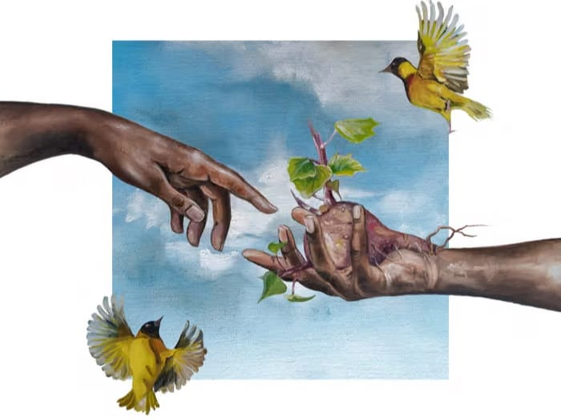

Production & Curation
Peace Places Listening Party - Nyokabi Kariuki

Produced and hosted a pre-release listening experience for Nyokabi Kariuki’s Peace Places: Kenyan Memories, a sonic exploration of memory, place, identity and home. The intimate gathering brought audiences together to experience the project in full, creating space for reflection, conversation and connection around Nyokabi’s work.
- RoleProducer